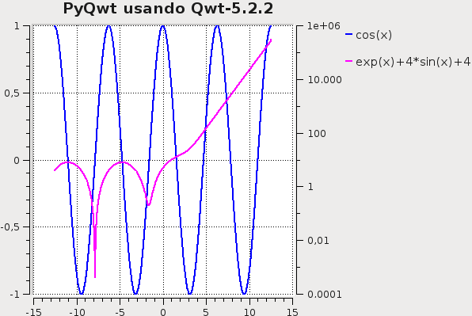

Generar una gráfica en python con PyQwt. Parte 1
Posted on dom 11 diciembre 2011 in Tutorial de Python • 1 min read
Continuando con las librerías para generar gráficos en Python ahora explicaré como usar la librerías PyQwt de Qt para crear gráficas.
Este ejemplo se baja en la introducción que tiene la página oficial de PyQwt. En este caso se cambió el rango del arreglo y las funciones a graficar.
En el ejemplo se crea el rango de valores con numpy, luego se crea la instancia de la Clase QApplication para crear las 2 curvas y luego salvarla en un archivo con formato .png.
El código se muestra a continuación:
#!/usr/bin/env python
#Importar numpy
import numpy as np
#Importar las librerias Qt
from PyQt4.Qt import *
#Importar las librerias Qwt5
from PyQt4.Qwt5 import *
#De Qwt5 importar qplt
from PyQt4.Qwt5.qplt import *
#Importar sleep
from time import sleep
#Instanciar la clase QApplication
application = QApplication([])
# Crea un arreglo desde -4PI a 4Pi en incrementos de 0.01
x = np.arange(-4*np.pi, 4*np.pi, 0.01)
#Crea 2 curvas con el eje vertical en escala logaritmica.
p = Plot(Curve(x, np.cos(x), Pen(Blue, 2), "cos(x)"),
Curve(x, np.exp(x)+4+4*np.sin(x), Pen(Magenta,2), "exp(x)+4*sin(x)+4",Y2),
Axis(Y2, Log),"PyQwt usando Qwt-%s " % QWT_VERSION_STR)
#Hace una captura de pantalla de la imagen y lo guarda en un archivo con formato PNG
QPixmap.grabWidget(p).save('cli-plot-1.png', 'PNG')
La gráfica generada se muestra en la siguiente figura:

¡Haz tu donativo! Si te gustó el artículo puedes realizar un donativo con Bitcoin (BTC) usando la billetera digital de tu preferencia a la siguiente dirección: 17MtNybhdkA9GV3UNS6BTwPcuhjXoPrSzV
O Escaneando el código QR desde la billetera: